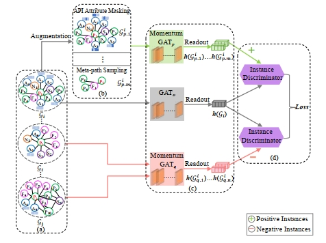

|
I’m currently an assistant professor in the School of Information Science and Engineering at Shandong Normal University (SDNU). Before that, I received my Ph.D. degree from Beihang University, under the supervision of Prof. Xudong Liu and Prof. Jianxin Li .
My research interests include:
|
|
|
|
RHGNN:Fake Reviewer Detection Based on Reinforced Heterogeneous Graph Neural Networks
Jun Zhao, Minglai Shao, Jianchao Liu, Hong Wang. Knowledge-Based Systems. KBS(SCI一区), 2023. [Paper] |
|
TI-MVD: A temporal interaction-enhanced model for malware variants detection
Chen Liu, Bo Li, Jun Zhao*, Ziyang Zhen, Weiwei Feng, Xudong Liu. Knowledge-Based Systems. KBS(SCI一区), 2023. [Paper] |

|
MalAF: Malware Attack Foretelling From Run-Time Behavior Graph Sequence
Chen Liu, Bo Li, Jun Zhao*, Xudong Liu, Chunpei Li. IEEE Transactions on Dependable and Secure Computing. IEEE TDSC(CCF A类期刊), 2023. [Paper] |
|
A2-CLM: Few-Shot Malware Detection Based on
Adversarial Heterogeneous Graph Augmentation Chen Liu, Bo Li, Jun Zhao, Weiwei Feng, Xudong Liu, Chunpei Li. IEEE TRANSACTIONS ON INFORMATION FORENSICS AND SECURITY. IEEE TIFS (CCF A类期刊, SCI一区), 2023. [Paper] |
|
Adaptive dual graph contrastive learning based on heterogeneous signed network for predicting adverse drug reaction
Luhe Zhuang, Hong Wang, Jun Zhao, Yanshen Sun. Information Sciences. INS(SCI一区), 2023. [Paper] |
|
Learning graph deep autoencoder for anomaly detection in multi-attributed networks
Minglai Shao, Yujie Lin, Qiyao Peng, Jun Zhao, Zhan Pei, Yueheng Sun. Knowledge-Based Systems. KBS(SCI一区), 2023. [Paper] |

|
A Soft-Attention Guidance Stacked neural Network for neoadjuvant chemotherapy’s pathological response diagnosis using breast dynamic contrast-enhanced MRI
Tianyu Liu, Hong Wang, Shengpeng YU, Feiyan Feng, Jun Zhao*. Biomedical Signal Processing and Control. BSPC (SCI二区), 2023 [Paper] |
|
A novel hierarchical attention-based triplet network with unsupervised domain adaptation for network intrusion detection
Jinghong Lan, Xudong Liu, Bo Li, Jun Zhao. Applied Intelligence. AI(SCI二区), 2023 [Paper] |
|
Cyber threat prediction using dynamic heterogeneous graph learning
Jun Zhao, Minglai Shao, Hong Wang, Xiaomei Yu, Bo Li, Xudong Liu. Knowledge-Based Systems. KBS(SCI一区), 2022. [Paper] |
|  |
Fewm-hgcl: Few-shot malware variants detection via heterogeneous graph contrastive learning
Chen Liu, Bo Li, Jun Zhao*, Ziyang Zhen, Xudong Liu, Qunshi Zhang. Knowledge and Information Systems. TDSC(CCF A类期刊), 2022. [Paper] |

|
MEMBER: A multi-task learning model with hybrid deep features for network intrusion detection
Jinghong Lan, Xudong Liu, Bo Li, Jie Sun, Beibei Li, Jun Zhao. Computers & Security. CS(CCF B类期刊), 2022. [Paper] |

|
Dual Network Contrastive Learning for Predicting Microbe-Disease Associations
Enhao Cheng, Jun Zhao*, Hong Wang, Shuguang Song, Shuxian Xiong, Yanshen Sun. IEEE/ACM Transactions on Computational Biology and Bioinformatics. TCBB, 2022. [Paper] |

|
Porn2Vec: A robust framework for detecting pornographic websites based on contrastive learning
Jun Zhao, Minglai Shao, Hao Peng, Hong Wang, Bo Li, Xudong Liu. Knowledge-Based Systems. KBS(SCI一区), 2021. [Paper] |

|
Automatically predicting cyber attack preference with attributed heterogeneous attention networks and transductive learning
Jun Zhao, Xudong Liu, Qiben Yan, Bo Li, Minglai Shao, Hao Peng, Lichao Sun Computers & Security. CS(CCF B类期刊, SCI二区), 2021. [Paper] |

|
MG-DVD: A real-time framework for malware variant detection based on dynamic heterogeneous graph learning
Chen Liu, Bo Li, Jun Zhao, Ming Su, XuDong Liu. the 30th International Joint Conference on Artificial Intelligence. IJCAI(CCF A类会议), 2021. [Paper] |

|
MASA: An efficient framework for anomaly detection in multi-attributed networks
Minglai Shao, Jianxin Li, Yue Chang, Jun Zhao, Xunxun Chen Computers & Security. CS(CCF B类期刊, SCI二区), 2021. [Paper] |

|
Multi-attributed heterogeneous graph convolutional network for bot detection
Jun Zhao, Xudong Liu, Qiben Yan, Bo Li, Minglai Shao, Hao Peng. Information Sciences. INS(SCI一区), 2020. [Paper] |

|
TIMiner: Automatically extracting and analyzing categorized cyber threat intelligence from social data
Jun Zhao, Qiben Yan, Jianxin Li, Minglai Shao, Zuti He, Bo Li. Computers & Security. CS(CCF B类期刊, SCI二区), 2020. [Paper] |

|
Cyber threat intelligence modeling based on heterogeneous graph convolutional network
Jun Zhao, Qiben Yan, Xudong Liu, Bo Li, Guangsheng Zuo. 23rd international symposium on research in attacks, intrusions and defenses. RAID(CCF B类会议), 2020. (会议仅录用32篇) [Paper] |
|
Conference Reviewer:
|